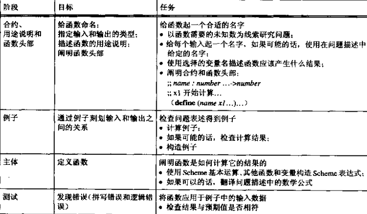

这一章开始4小段简单介绍了一下Racket/Scheme语法。
Racket/Scheme的语法相当简单，所以廖廖几页就说完了。
相关的习题也是讲解：
各种不符合Racket/Scheme语法情况下的代码的运行出错提示是什么。
2.5段则给出了一个 设计诀窍 表格。 其实就是设计一个函数的具体步骤有哪些。
程序设计原则
这里我也具体列出下面每章都会提及的程序设计原则。
辅助函数原则
对在表述中所提到的或在进行实例计算中所发现的每种依赖关系 都使用一个辅助函数进行明确表达。
变量定义原则
给频繁使用的常量定义一个名字，并在程序中使用。
表达式计算原则
简化最外（最左的）可以计算的表达式。